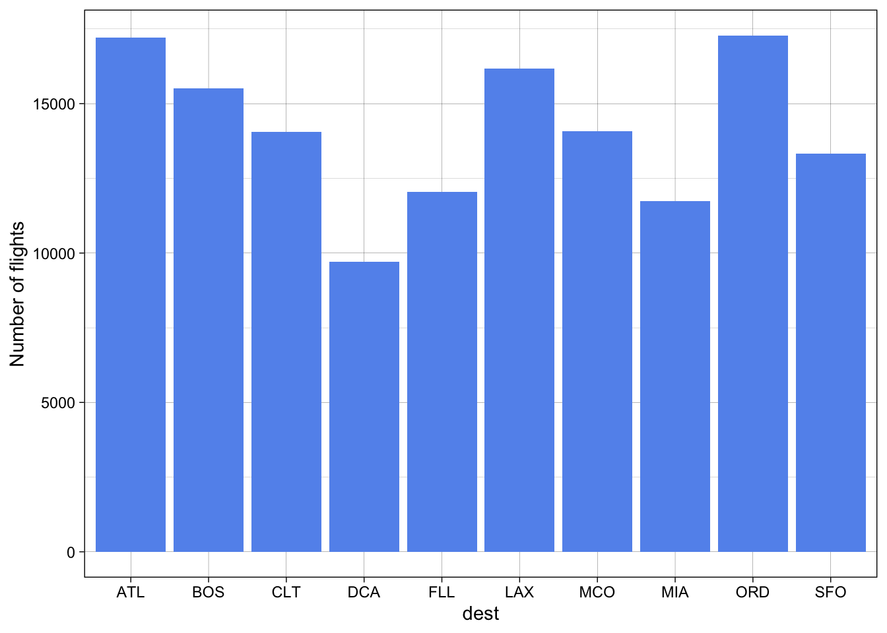

# loading libraries
library(tidyverse)
library(nycflights13)
# Copy paste this code into the console if you don't have the nycflights13 package
# install.packages("nycflights13")
Mystery_dest <- flights %>% select(carrier, dest, origin) %>% group_by(dest) %>%
summarise(`Number of flights` = n()) %>% full_join(airports, by = c("dest" = "faa")) %>% select(dest, name, `Number of flights`)
mysteryPlanes = flights |> select(flight,carrier,dest,origin) |>
# grouping by destination to get the number of mystery planes by summarizing and joining to the airports data on the dest and faa variables
group_by(dest) |>
summarise(Number=n()) |>
full_join(airports, by = c("dest"="faa")) |> select(dest,name,Number)
Mystery_dest %>%
arrange(desc(`Number of flights`)) %>%
head(10) |>
ggplot() +
geom_col(
aes(x = dest, y = `Number of flights`),
fill = "cornflowerblue"
) +
theme_linedraw()
# Uncomment the code below to save the mysteryPlanes data as a csv to your repository
# write.csv(mysteryPlanes, "Path to export the DataFrame\\File Name.csv", row.names=FALSE)